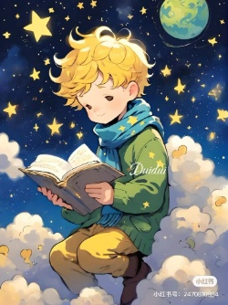
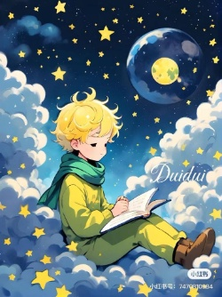

Introducción

La lectura creativa es un enfoque dinámico y activo de la lectura que va más allá de la simple decodificación de palabras. Se trata de un proceso donde el lector no solo interpreta el texto, sino que se adentra en él, creando imágenes mentales, conectando ideas, y desarrollando una relación personal con el contenido.
Es un viaje que invita a la mente a explorar más allá de las palabras impresas, a sumergirse en mundos imaginarios y a experimentar nuevas perspectivas. Al leer con una mirada abierta y curiosa, nos conectamos con ideas, emociones y universos que transforman nuestra forma de ver el mundo. Esta práctica no solo enriquece el conocimiento, sino que también despierta nuestra creatividad, nos desafía a pensar de manera diferente y nos permite descubrir nuevas formas de expresar nuestras propias ideas. En esta lectura creativa, las posibilidades son infinitas, y cada página puede ser un portal hacia nuevas experiencias.

Objetivo General
Fomentar el desarrollo de la imaginación, creatividad y las habilidades cognitivas en niños y jóvenes a través de la lectura creativa, promoviendo la capacidad de pensamiento crítico y libre expresión.
Objetivos Específicos
- Estimular el pensamiento crítico y la resolución de problemas a través de lecturas que desafíen la comprensión e incursionen en la exploración de nuevas perspectivas.
- Potenciar la expresión oral y escrita a través de actividades que impliquen la recreación de pasajes o lecturas realizadas dándoles un nuevo enfoque.